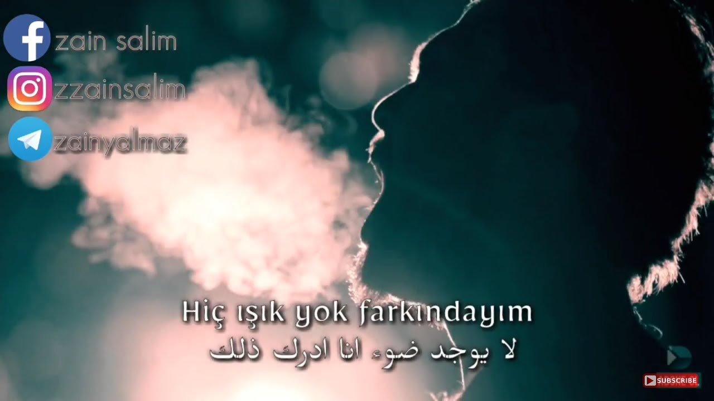
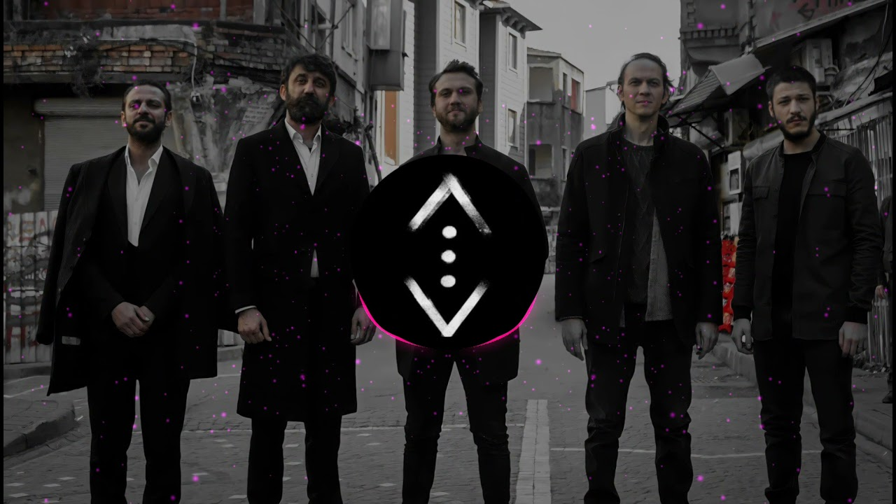
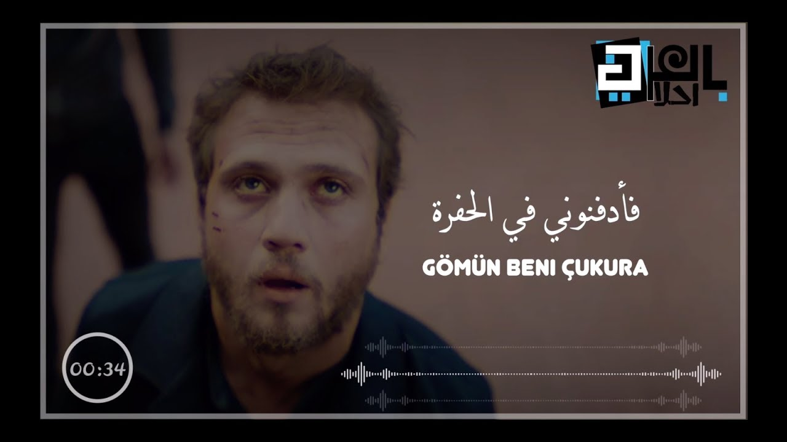
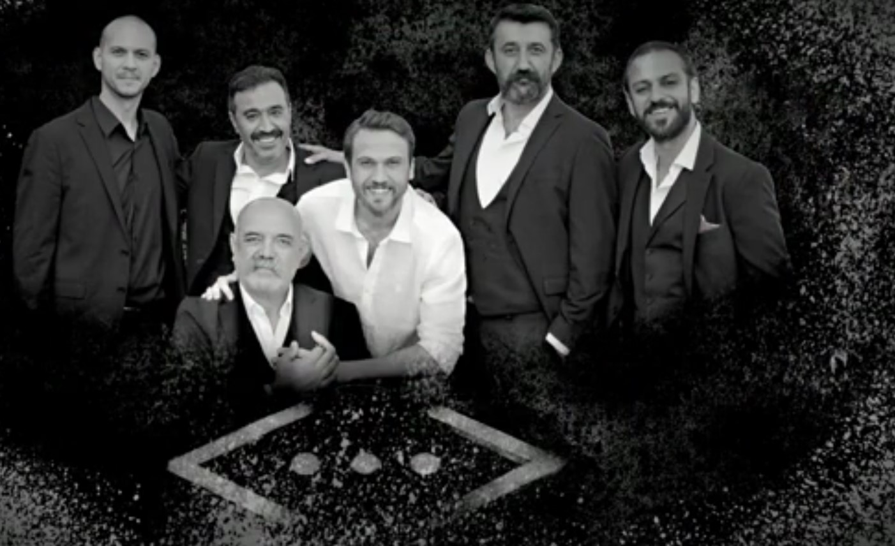
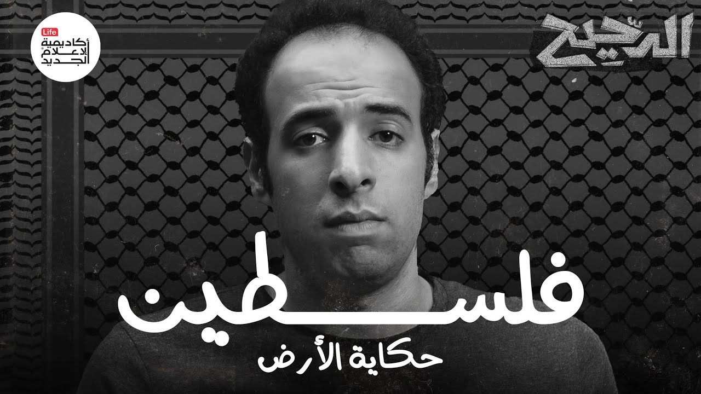
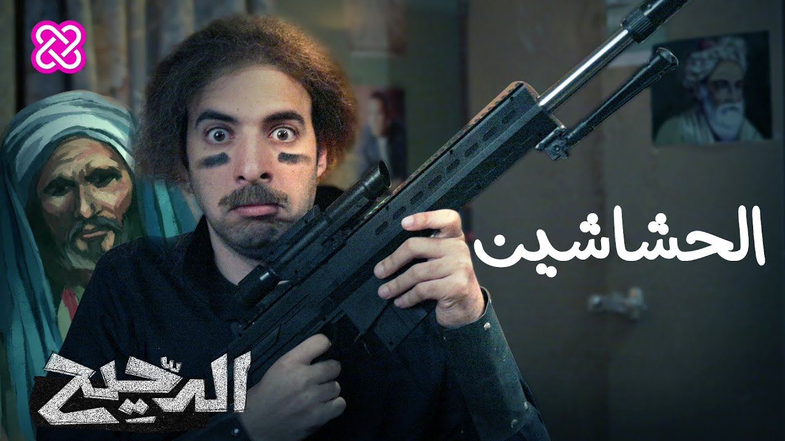
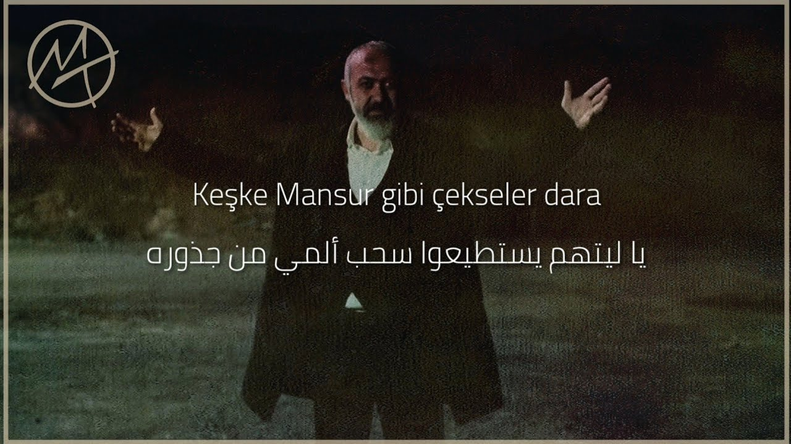
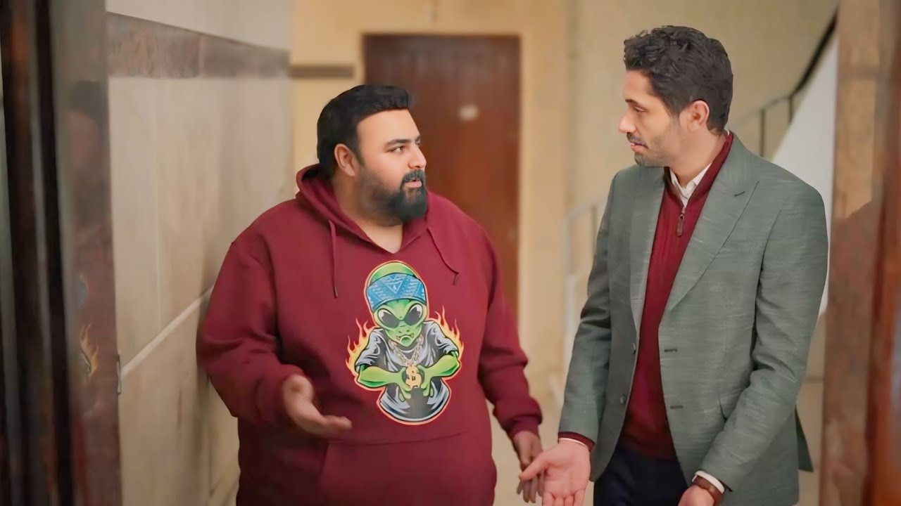
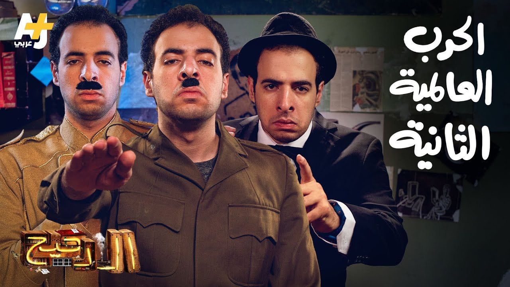

اغنية مسلسل الحفرة - لايوجد ضوء - مترجمة للعربية Hiç Işık Yok
Hassan Abdelnby
20M Views • 6 year ago

اغنيه مسلسل الحفرة (لايوجد حماس) الاصلية كاملة Çukur Gazapizm
Hassan Abdelnby
40M Views • 4 year ago





اغنية مسلسل الحفرة الحلقة 34 الموسم 4 مترجمة - الألم في روحي - Ruhumda Sızı
Hassan Abdelnby
10M Views • 4 month ago

